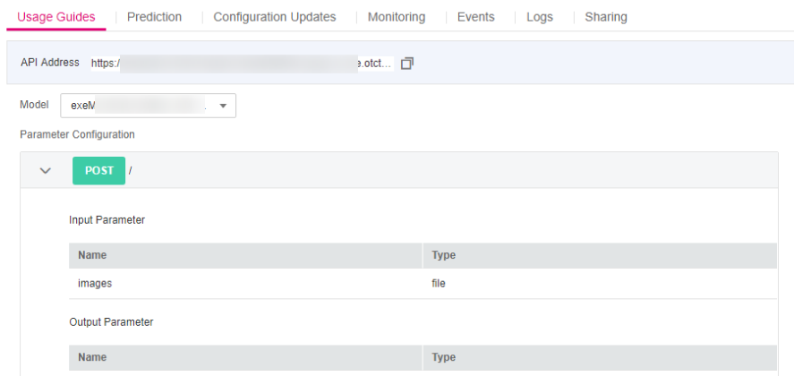
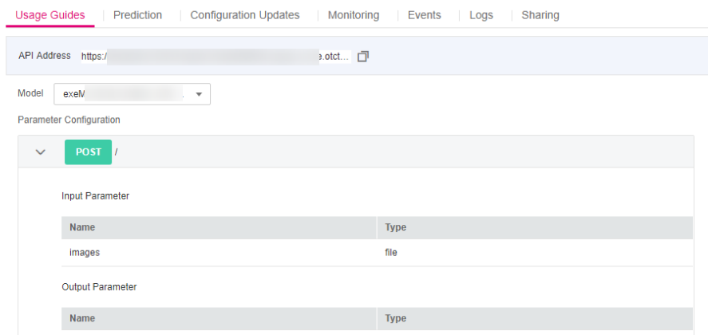
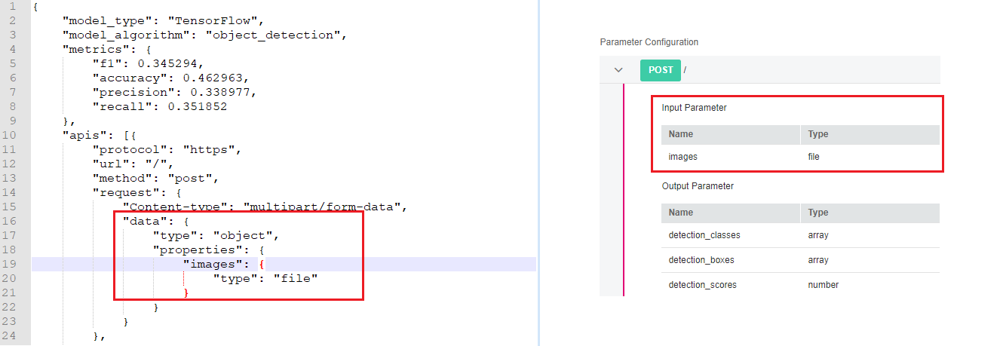
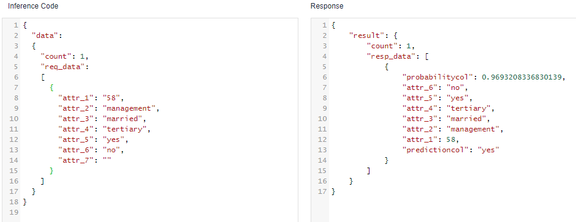
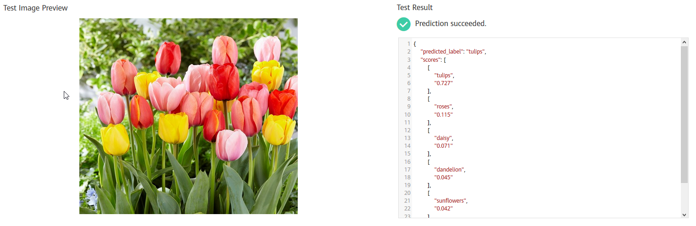

After a model is deployed as a real-time service, you can debug code or add files for testing on the Prediction tab page. Based on the input request (JSON text or file) defined by the model, the service can be tested in either of the following ways:
- JSON Text Prediction: If the input type of the model of the deployed service is JSON text, that is, the input does not contain files, you can enter the JSON code on the Prediction tab page for service testing.
- File Prediction (Images and Audios): If the input type of the model of the deployed service is file, including images, audios, and videos, you can add images on the Prediction tab page for service testing.

- If the input type is image, the size of a single image must be less than 10 MB.
- The following image types are supported: png, psd, jpg, jpeg, bmp, gif, webp, psd, svg, and tiff.
Input Parameters
For the service that you have deployed, you can learn about its input parameters of the service, that is, the input request type mentioned above, on the Usage Guides tab page of the service details page.
Figure 1 Viewing the Usage Guides tab page


The input parameters displayed on the Usage Guides tab page depend on the model source that you select.
- If you use a custom model with the inference code and configuration file compiled by yourself (Specifications for Compiling the Model Configuration File), the Usage Guides tab page only visualizes your data. The following figure shows the mapping between the input parameters displayed on the Usage Guides tab page and the configuration file.Figure 2 Mapping between the configuration file and Usage Guides
 - If your model is imported using a model template, the input and output parameters vary with the template. For details, see Introduction to Model Templates.
JSON Text Prediction
- Log in to the ModelArts management console and choose Service Deployment > Real-Time Services.
- On the Real-Time Services page, click the name of the target service. The service details page is displayed. On the Prediction tab page, enter the prediction code and click Predict to perform prediction.
Figure 3 Prediction code

File Prediction (Images and Audios)
- Log in to the ModelArts management console and choose Service Deployment > Real-Time Services.
- On the Real-Time Services page, click the name of the target service. The service details page is displayed. On the Prediction tab page, click Upload and select a test file. After the file is uploaded successfully, click Predict to perform a prediction test.
Figure 4 Image prediction
